AI-Native Product Manager & Designer.0→1 Consumer AI Products, Owned End to End.
Click — another scene
A tribute to Mies van der Rohe.
Series 1 / 2
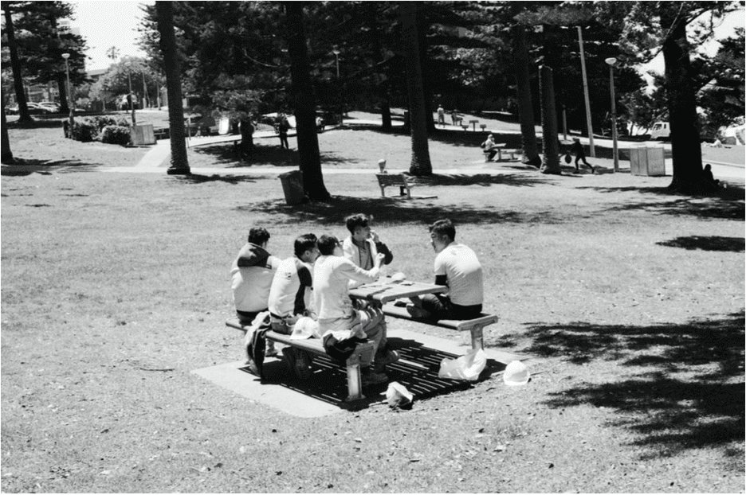
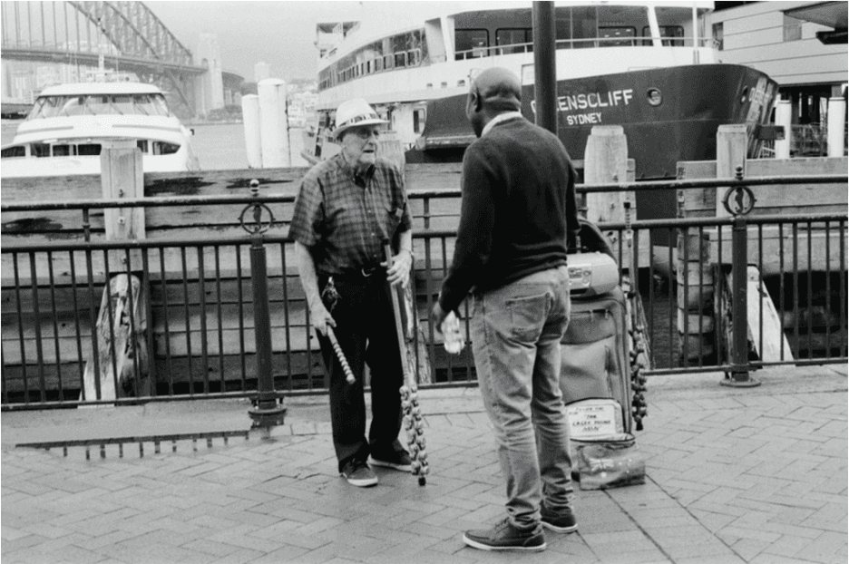
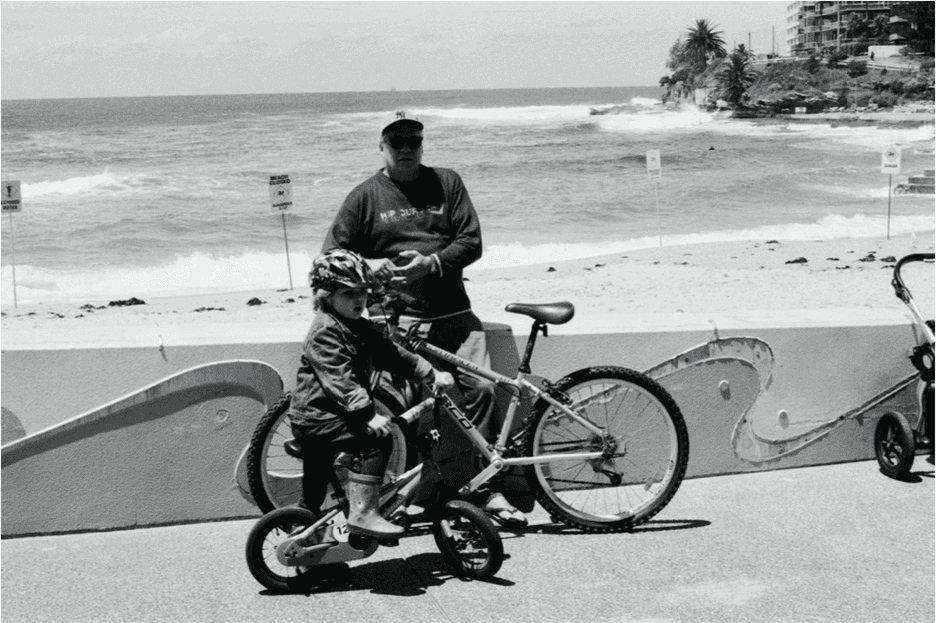
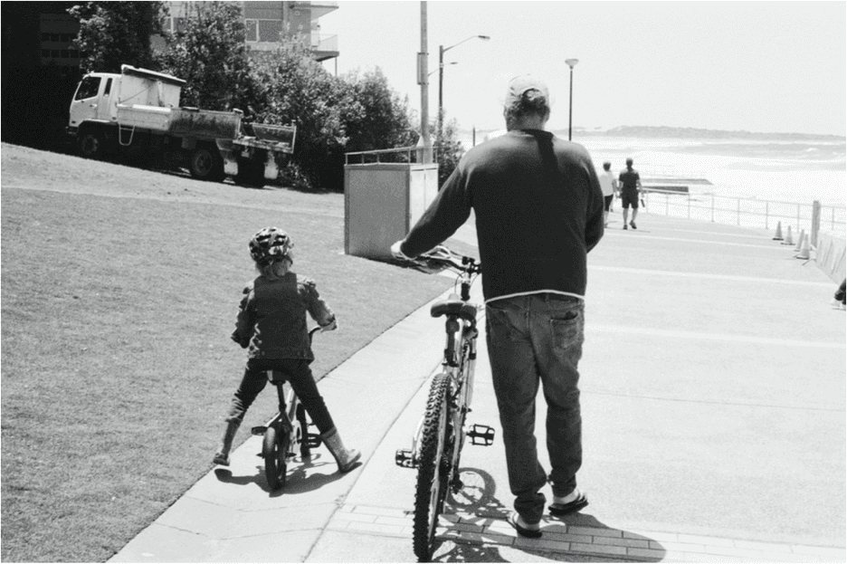
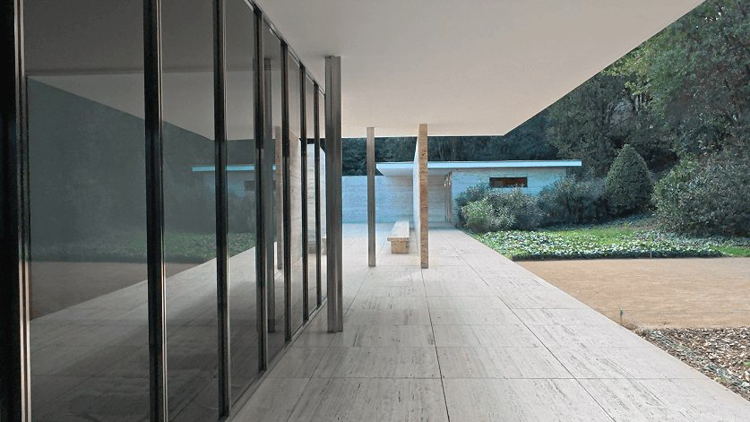
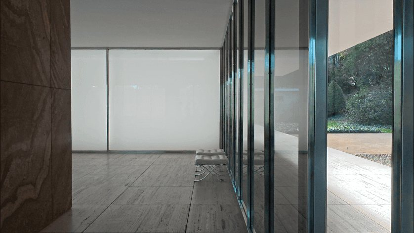
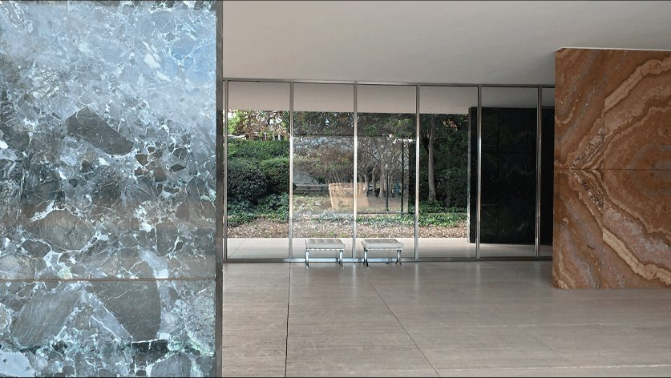
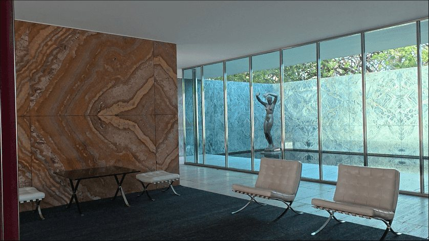
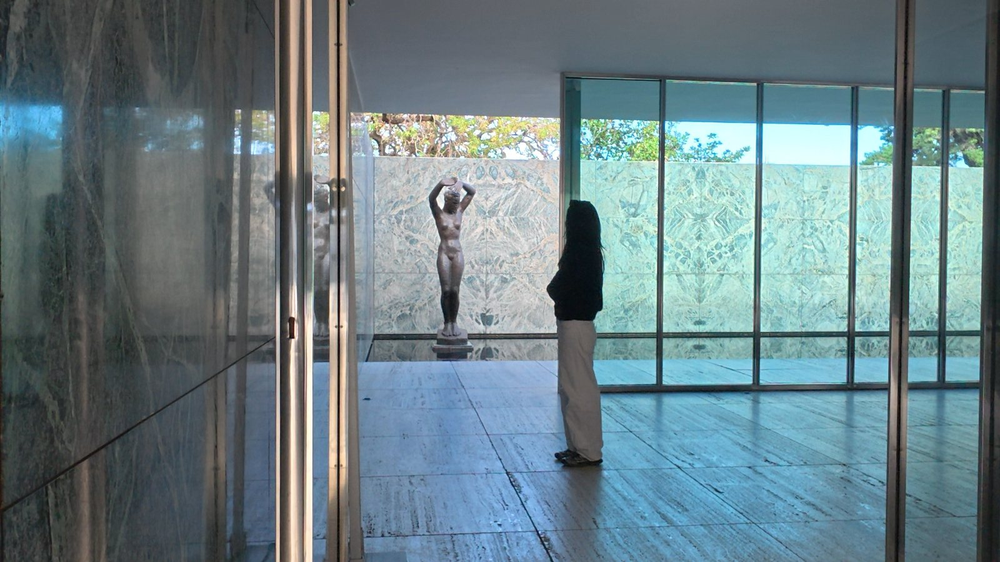
01 / 04
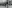
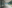
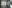
Experience
Education
Contact
Detail